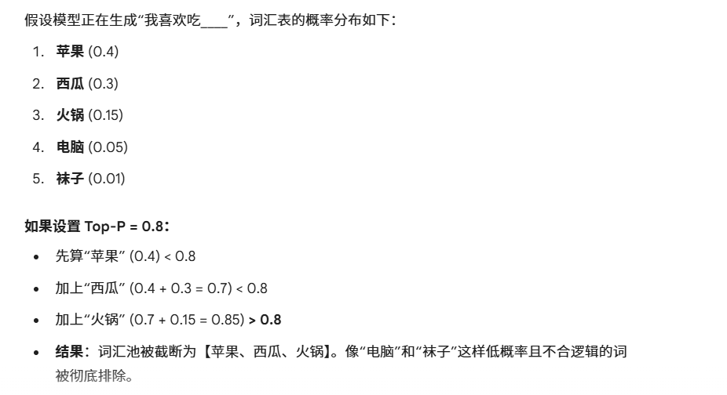
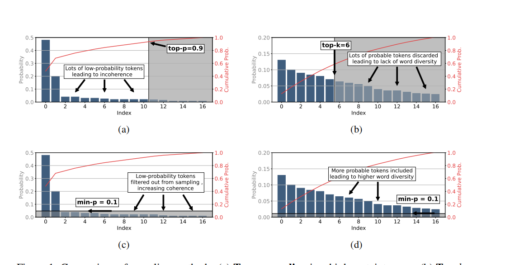
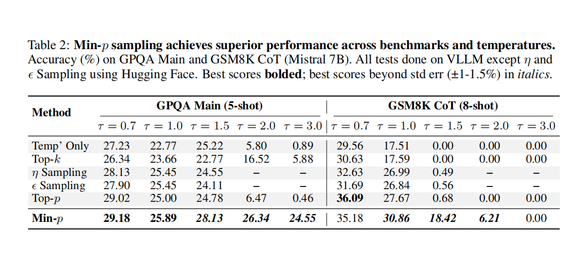
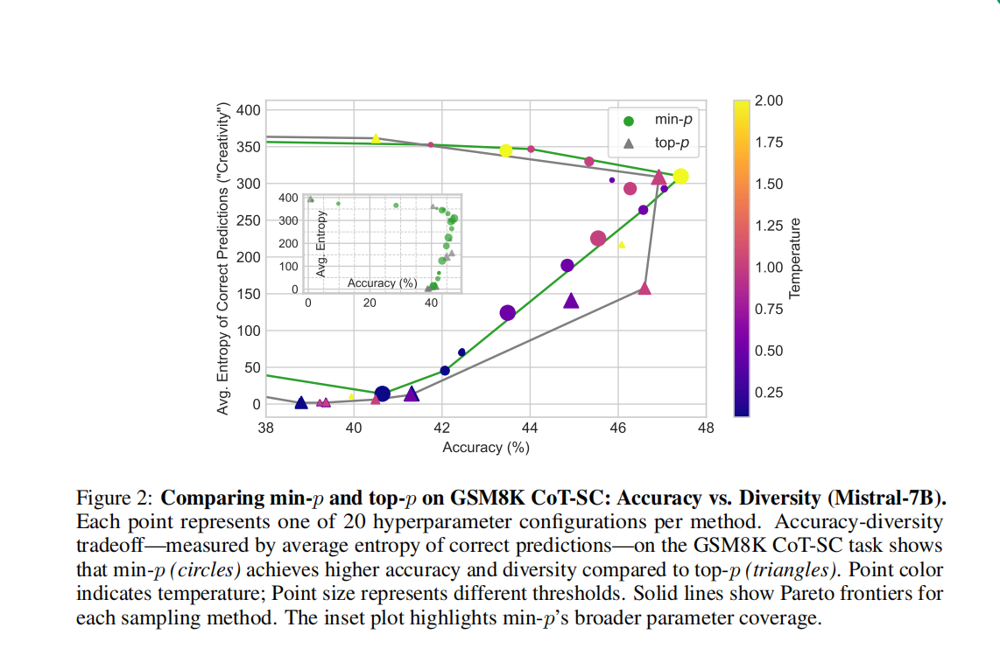
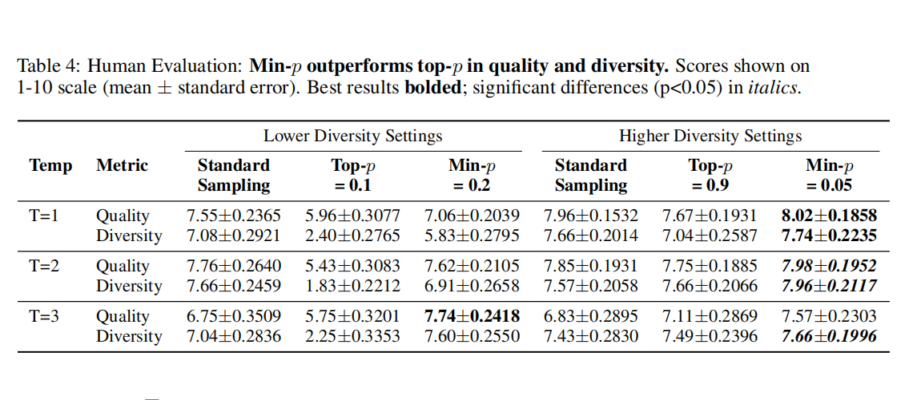

TURNING UP THE HEAT: MIN-p SAMPLING FOR CREATIVE AND COHERENT LLM OUTPUTS
研究背景
在 LLM 的文本生成过程中，核心挑战在于如何在 “创造性” 和 “连贯性” 之间取得平衡。(其实就是之前提到的 Diversity 和 Quality 只是换了个说法)
现有的采样方法：
- Temperature (温度系数)： 提高温度（例如 T > 1.0）可以增加多样性，但会使概率分布变平坦；降低温度可以增加确定性，但会使概率分布变尖锐。Temperature的本质就是把原来的softmax()增加一个T的缩放因子。 $$P_i = \frac{\exp(Logit_i / T)}{\sum \exp(Logit_j / T)}$$
| 场景 | 温度设置 () | 候选词 A (高概率词) | 候选词 B (中概率词) | 候选词 C (低概率词) |
|---|---|---|---|---|
| 原始得分 (Logits) | (未缩放) | 2.0 | 1.0 | -1.0 |
| 低温 (保守) | T = 0.1 | 99.99% | 0.01% | 0.00% |
| 标准 (默认) | T = 1.0 | 70.53% | 25.95% | 3.52% |
| 高温 (创意) | T = 2.0 | 44.91% | 27.25% | 27.84% |
Top-p (Nucleus Sampling)： 先把所有的output概率从大到小排序，再选取累积概率达到 p 的前几个词。在高温度下，由于长尾分布变平，Top-p 仍然会把许多低概率、不连贯的词纳入候选池，导致生成质量崩塌。Top-p的本质就是设置了一个累计的概率阈值： 
Top-k： 强制只选前 k 个词。这是一种静态截断，无法根据模型对当前上下文的“信心”动态调整，缺乏灵活性 。
核心痛点： 现有的方法在高温度设置下，很难在保持逻辑连贯的同时提供高质量的创造性输出，且做不到动态调整。
解决方法
为了解决这些痛点，本文提出了Min-p 采样。该采样方法解决了以下问题： - 即使在极高温度（如 T = 3.0）下，Min-p 也能过滤掉那些相对于“最佳候选词”概率过低的词，从而防止模型胡言乱语。 - 解决了 Top-k 和 Top-p 对“模型确定性”不敏感的问题。Min-p 能根据模型是“非常确定”（高置信度）还是“犹豫不决”（低置信度）来自动收缩或放宽候选词的选择范围。 - 计算复杂度与易用性： 相比于 Mirostat 或 η-sampling 等基于熵的复杂采样方法，Min-p 非常简单，几乎不增加推理计算成本，且易于集成 。
Min-p 的核心思想是基于模型对首选词的“信心”来进行动态截断。算法逻辑在每个解码步骤 t，假设模型预测的词表概率分布为 P(x)：找到最大概率： 找出当前最可能的那个词的概率值，记为 pmax 。 pmax = maxv ∈ VP(v|x1 : t − 1)
计算截断阈值： 设定一个基础超参数 pbase（通常为 0.05 或 0.1），实际的过滤阈值 pscaled 是两者的乘积。 pscaled = pbase × pmax
构建候选池： 只有概率值大于等于 pscaled 的词才会被保留，其他的全部剔除。𝒱min = {v ∈ 𝒱 : P(v|x1 : t − 1) ≥ pscaled}
重归一化与采样： 在剩下的候选词中进行归一化并采样 。
如果模型觉得下一个词是“Apple”的概率是 90% (pmax = 0.9)，且 pbase = 0.1，那么阈值就是 0.09。所有概率低于 9% 的词都会被丢弃。这迫使模型专注于高概率词，保持连贯。如果模型觉得下一个词概率都很低，最高的也才 10% (pmax = 0.1)，那么阈值就变成了 0.01。这样更多低概率的词就有机会入选，增加了创造性和多样性。
使用一张图片解释这个采样方法的优势：如图(a, c)，在高确定性的场景下，top-p方法会引入很多小概率的token，导致low quality，但是min-p方法可以过滤掉这些小概率tokne。如图(b, d)，在低确定性的场景下，top-k方法会忽略掉很多高概率的token，导致low diversity，但是min-p方法不会忽略他们。 
实验论证
实验设置：
- 测试模型： Mistral 7B, Llama 3 (8B/70B), Mistral Large (123B)
- 对比基线： Top-p (p=0.9/0.95), Top-k, η-sampling, Mirostat, 单纯 Temperature 采样
- 超参数： Min-p 设置为 pbase ∈ {0.05, 0.1}；Top-p 设置为 0.9 或 0.95。
- 温度范围： 测试了从 0.7 到 3.0 甚至更高的温度范围
Mistral 7B在GPQA GSM8K上的测试
Mistral 7B 在不同温度下的准确率：在常规温度（T ≤ 1.0）下，Min-p 与 Top-p 表现相当。在高温度（T = 1.5, 2.0, 3.0）下，Top-p 的性能迅速崩溃，而 Min-p 仍然能保持较高的准确率。例如在 GSM8K CoT 任务中，当 T = 3.0 时，Top-p 得分为 0.00%，而 Min-p 仍有 6.21% 的得分，甚至在 T = 1.5 时 Min-p 还能达到 30% 以上的准确率，远超其他方法。 
绘制GSM8K CoT 任务中“准确率 (Accuracy)”与“多样性 (Diversity/Entropy)”的对比。图中绿色曲线（Min-p）始终位于灰色曲线（Top-p）的右上方。这说明在相同的准确率下，Min-p 能提供更高的多样性；或者在相同的多样性下，Min-p 能保持更高的准确率。 
Llama3 70B在故事生成任务上的测试 (人工评估)
使用 Llama 3 70B 生成故事，人类评价者根据“质量”和“多样性”打分（1-10分）。结果：在 T = 3.0 的极端设置下，Top-p 的质量得分跌至 ~1.2/10（完全不可读），而 Min-p 依然保持在 ~5.8/10，且多样性得分也更高 24。人类评估者在盲测中更倾向于认为 Min-p 生成的文本既有创意又逻辑通顺。 